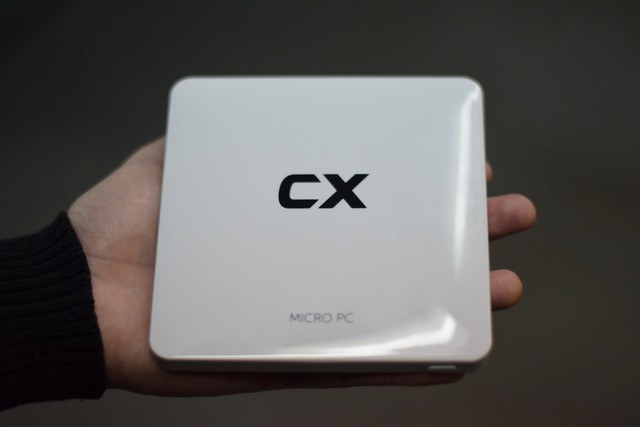

China construirá una nueva super computadora
El país mas poderoso del continente asiático recientemente indicó que el nuevo super computador será capaz de hacer nada mas y nada menos que un trillón
China construirá una nueva super computadora
El país mas poderoso del continente asiático recientemente indicó que el nuevo super computador será capaz de hacer nada mas y nada menos que un trillón
RAZER llega con la propuesta de una laptop diferente
Mucho se ha sabido de otras marcas dedicadas para gamers durante estos días, pero ahora le toca a una de las compañías que lleva igual
¿Poderosas computadoras de bolsillo? Sera posible !!!
Tomate un segundo de tu tiempo e imagina el poder llevar una computadora literalmente en tu bolsillo (y no estamos hablando de los smartphones)
El juego argentino AESIR On Line ya está disponible en Steam
El juego argentino Debt Deadline ya tiene lista su página en Steam
Batman Arkham Knight se actualiza en PC, PS4 y Xbox One con el traje de The Batman
Ya puedes probar la demo del remake fan del Resident Evil 2 en primera persona